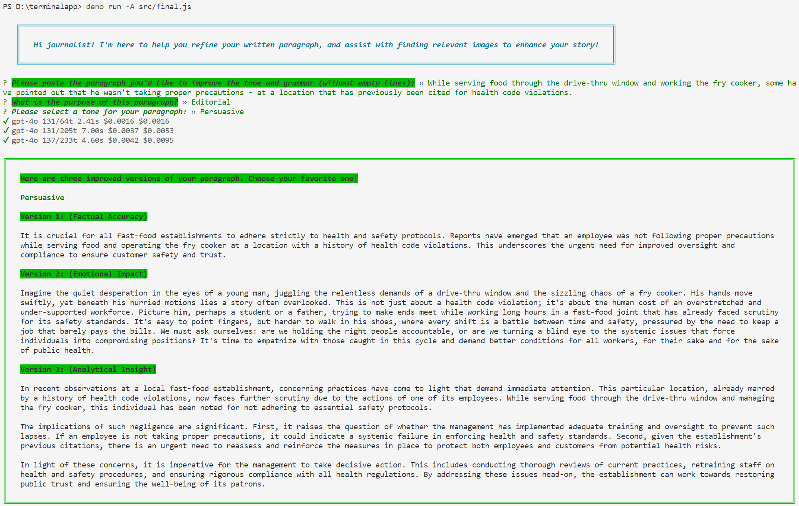
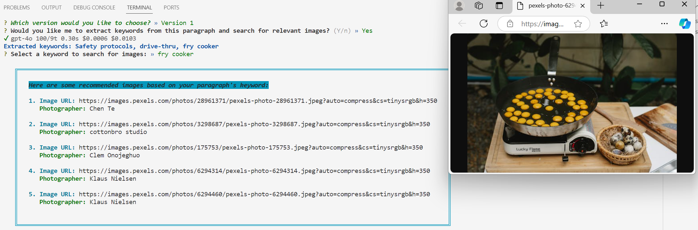
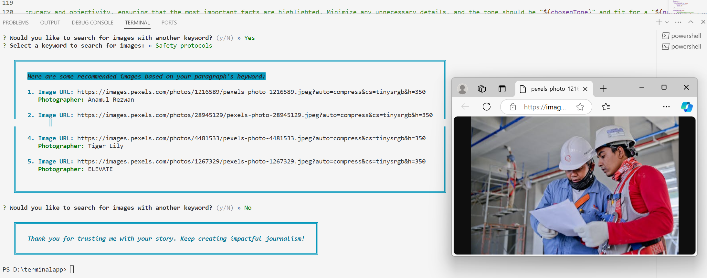

Journalist Assistant
A command-line app designed to assist journalists in refining their written paragraphs and finding relevant images.
Using GPT, it analyzes and enhances the tone and grammar of paragraphs, offering different writing emphasis to suit various types of news. Then it extracts keywords using GPT and finds suitable images by integrating with the Pexels API, streamlining the process of creating visually enriched news.
This tool saves journalists time and helps them produce more polished content.


